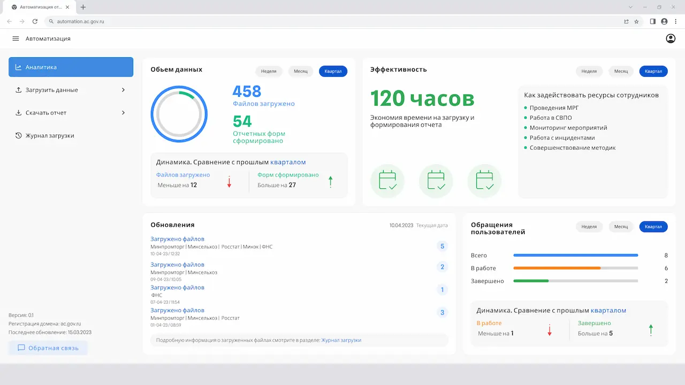
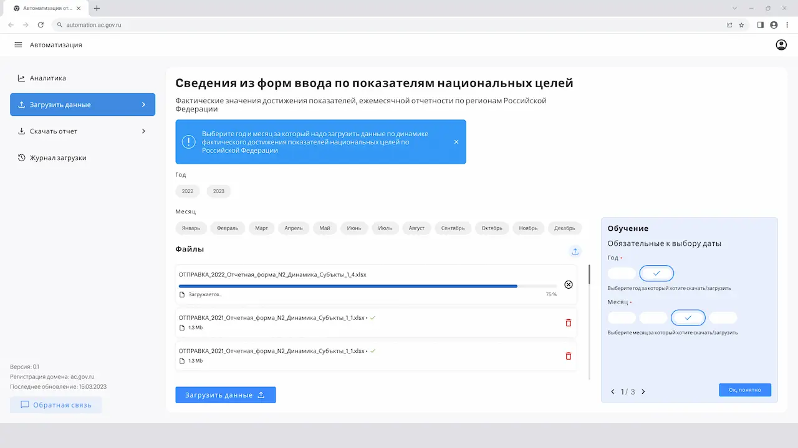
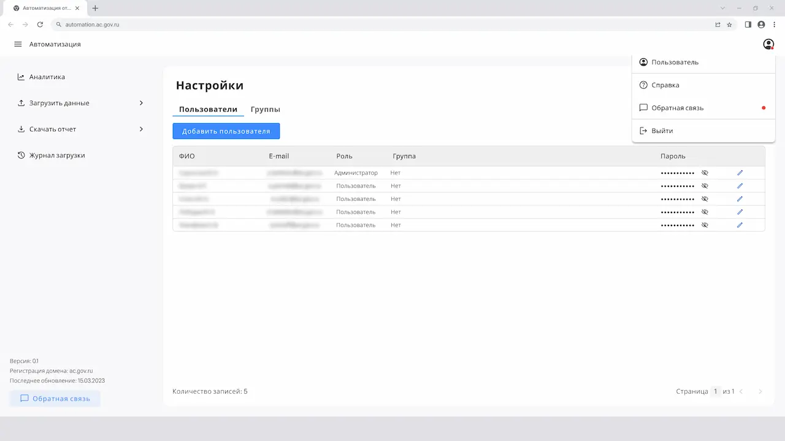
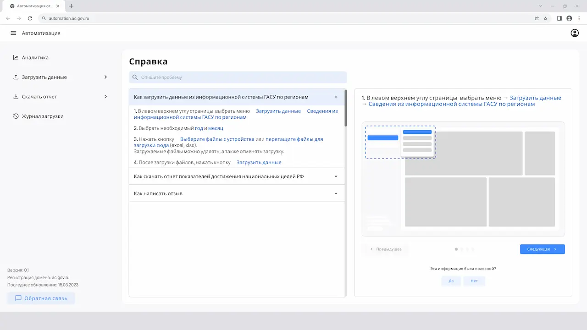

Контекст
Система была разработана для автоматизации обработки аналитической отчетности по показателям национальных целей Российской Федерации.
Аналитики ежемесячно загружали таблицы с фактическими значениями показателей из регионов РФ. Система автоматически считывала данные из файлов, заполняла базу данных и формировала отчеты для дальнейшего анализа.
На главной странице системы размещался аналитический дашборд, который позволял быстро оценить объем обработанных данных и эффективность автоматизации.
Пользователи могли загружать новые файлы, отслеживать статус обработки данных и формировать отчетность за выбранный период.
Моя роль
- Сбор требований и обсуждение решений co стейкхолдерами
- Проектирование архитектуры приложения и пользовательских сценариев
- Проектирование интерфейсов системы
- Разработка UI Kit: компоненты, типографика, цветовая система, графики
- Подготовка документации и спецификаций интерфейсов
- Сопровождение разработки и проведение дизайн-ревью
Решения
Интерфейс был спроектирован вокруг ключевых задач пользователей: загрузка данных, контроль обработки файлов и формирование отчетов. Структура системы позволяла быстро переключаться между этапами работы с данными.
Главная страница системы отображала ключевые показатели работы: количество загруженных файлов, сформированные отчеты и оценку сэкономленного времени за счет автоматизации процессов.
Результат
Система была внедрена и переведена в промышленную эксплуатацию. Автоматизация загрузки и обработки отчетных данных позволила сократить объем ручной работы аналитиков и повысить прозрачность процессов формирования отчетности.
Интерфейсы



